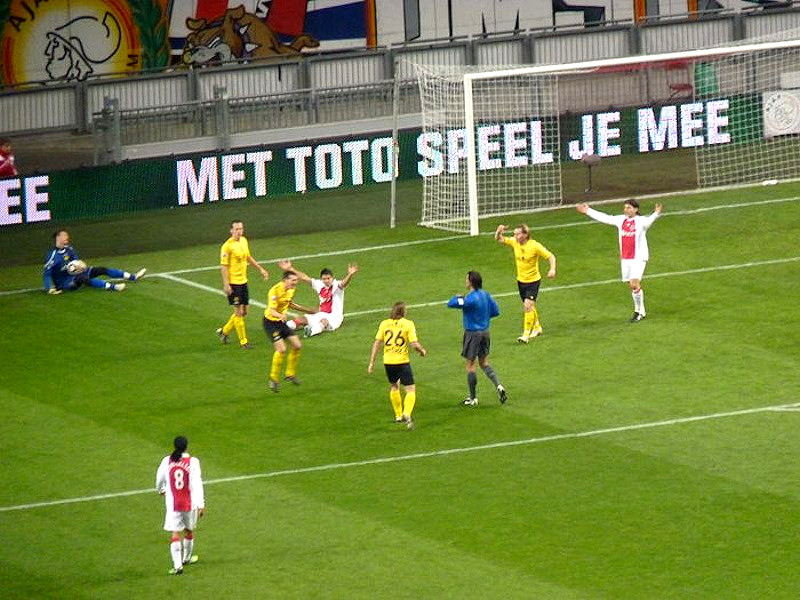

Een artikel in De Telegraaf over het mogelijk bevoordelen van Roda door
Twente-fan en scheidsrechter Nijhuis vormde de voedingsbodem
voor deze arbiter om bis zum kotzen het tegenovergestelde te
bewijzen.

Nadat Ajax er in de eerste helft weinig van bakte met in totaal slechts vier
kansen bleef Roda prima overeind en creëerde het zelf de nodige
kansen waarvan de grootste die van Junker was die alleen voor keeper
Stekelenburg naast schoot.
Nijhuis die toch al behoorlijk in het nadeel van Roda floot besliste vroeg
in de tweede helft om een Schwalbe van Suarez te belonen met
een penalty. Kind van de rekening was De Fauw die zodoende een gele kaart
aangenaaid kreeg. Achteraf gaf Suarez toe dat er geen
contact was geweest.Schwalbenheini Suarez ontlokte zonnenbankhomo Naaihuis
hiermee een heerlijk geile gele kaart voor De Fauw.
Suarez verzilvert de pingel: 1-0, (54').

De Jong van Ajax maakte opzichtig hands wat niet gezien werd door Nijhuis.
Vervolgens kwam hij binnen de zestien in aanraking met
De Fauw die hiervoor zijn tweede gele kaart kreeg. Suarez benutte de tweede
toegekende penalty: 2-0, (69').
Suarez scoorde voorts 3-0, (79') en 4-0, (86'). Door het dubbelgeel van De
Fauw en een overtrokken gele kaart voor Saeijs speelt Roda a.s.
zaterdag met een defensie die op twee plaatsen gewijzigd moet worden.
De begrijpelijke emoties bij de Roda-staf. Butcher wilde Nijhuis molesteren
maar werd daarin helaas verhinderd. Hij moest na de verbale
explosie evenals Norbert naar de tribune.
Deze is voor AWH Nijhuis.